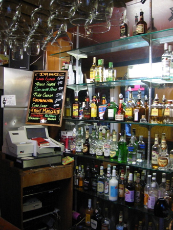

The Blue Plate betrothed and I have gotten to know two young hipsters who have traveled all over South America and happen to speak fluent Spanish (just like Mrs. The Bachelor).
They dragged us out, the other night, to a fun little taqueria right at closing time. Our friends have friends who work there, so we were treated to free beer, epanadas, and fun little sandwiches.

(note “Cuba Libre” on the menu)
We got together again on Monday night to have dinner. The friends of friends are from El Salvador, and brought over ingredients for pupusas.
I got a first hand lesson — all in Spanish — in how to put one together.
Pupusas are basically these fat tortillas stuffed with meat and cheese.
You start with a ball of masa dough, about the size of a plum. Using a complex, two handed rotate-and-pinch maneuver, you turn the ball of dough into a flat round disk.
Into the center of this disk you drop a small handful of shredded, cooked, pork and crumbled queso.
The queso has been warmed in the oven just a bit so it’s soft and easy to work with.
You work the dough around the filling into a ball again, and using the same rotate-and-pinch maneuver, you reshape it into a disk. The rounds get laid out on a hot skillet with just a touch of oil.
They’re turned regularly until cooked through. They get nice and toasty on the outside, with melty cheese on the inside.
Pupusas are served with a sort of slaw (which I can’t even begin to remember how to say) and a mild tomato salsa. (the manly men in attendence — including yours truly — added extra, extra hot sauce)
They are eaten with a fork at first, until you’ve finished one — then it’s acceptable to use your fingers.
That night I discovered that pupusas are nature’s perfect beer accompaniment. I didn’t want to stop making and eating them (and chasing them with beers). Unfortunately it was a Monday and I do have a job thing to go to.